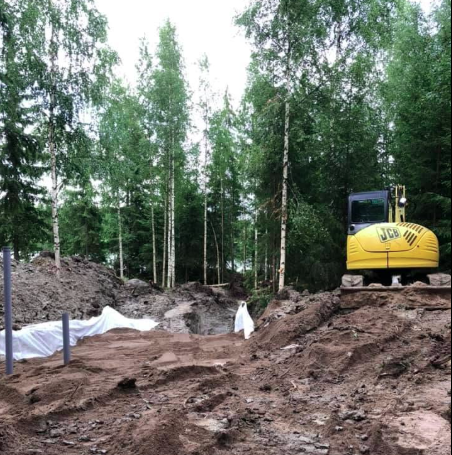

Maanrakennus ja maansiirto
Maanrakennus Lappeenrannassa, maansiirtotyöt, kaivinkoneurakointi, kaivinkonetyöt, tasaukset, täytöt ja tontin valmistelut.
Maanrakennus- ja maansiirtotyöt voivat sisältää maa-ainesten siirtoa, kaivantoja, tasauksia, täyttöjä, pihan muotoilua ja tontin valmistelua.